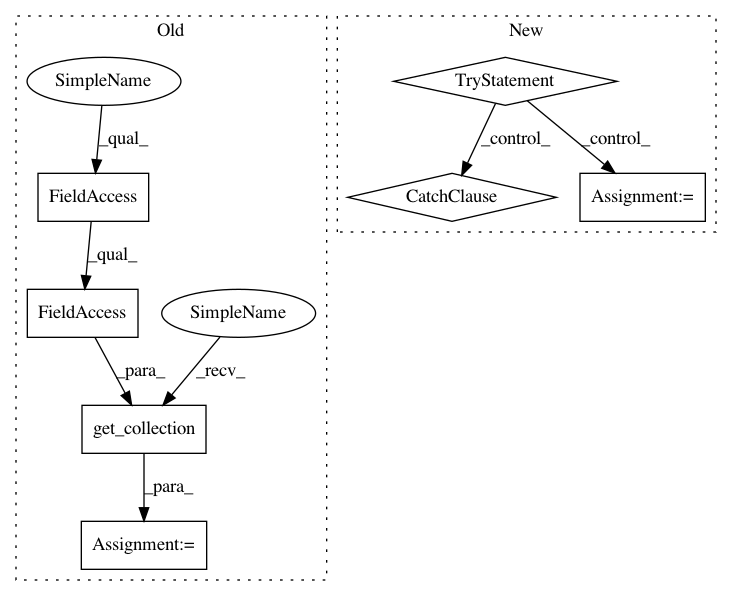

d42df89c351e0c2a031ea3a9ae17fb7b844e7b79,tensorlayer/layers.py,BatchNormLayer,__init__,#BatchNormLayer#Any#Any#Any#Any#Any#Any#Any#Any#,1680
Before Change
self.outputs = act( tf.nn.batch_normalization(self.inputs, mean, variance, beta, gamma, epsilon) )
//x.set_shape(inputs.get_shape()) ??
variables = tf.get_collection(tf.GraphKeys.VARIABLES, scope=vs.name)
// print(len(variables))
// for idx, v in enumerate(variables):
// print(" var {:3}: {:15} {}".format(idx, str(v.get_shape()), v.name))
After Change
//// 3.
// These ops will only be preformed when training.
mean, variance = tf.nn.moments(self.inputs, axis)
try: // TF12
update_moving_mean = moving_averages.assign_moving_average(
moving_mean, mean, decay, zero_debias=False) // if zero_debias=True, has bias
update_moving_variance = moving_averages.assign_moving_average(
moving_variance, variance, decay, zero_debias=False) // if zero_debias=True, has bias
// print("TF12 moving")
except Exception as e: // TF11
update_moving_mean = moving_averages.assign_moving_average(
moving_mean, mean, decay)
update_moving_variance = moving_averages.assign_moving_average(
moving_variance, variance, decay)
// print("TF11 moving")
def mean_var_with_update():
with tf.control_dependencies([update_moving_mean, update_moving_variance]):
return tf.identity(mean), tf.identity(variance)
In pattern: SUPERPATTERN
Frequency: 3
Non-data size: 7
Instances
Project Name: zsdonghao/text-to-image
Commit Name: d42df89c351e0c2a031ea3a9ae17fb7b844e7b79
Time: 2017-01-18
Author: dhsig552@163.com
File Name: tensorlayer/layers.py
Class Name: BatchNormLayer
Method Name: __init__
Project Name: zsdonghao/text-to-image
Commit Name: d42df89c351e0c2a031ea3a9ae17fb7b844e7b79
Time: 2017-01-18
Author: dhsig552@163.com
File Name: tensorlayer/layers.py
Class Name: BatchNormLayer
Method Name: __init__
Project Name: tflearn/tflearn
Commit Name: a76c41d2432058c33f3bd34d962ffb232cfce99a
Time: 2016-12-14
Author: aymeric.damien@gmail.com
File Name: tflearn/helpers/trainer.py
Class Name: Trainer
Method Name: __init__
Project Name: deepchem/deepchem
Commit Name: f1df735684946dbbcefe41e41c7b1c3f2f751a07
Time: 2017-06-05
Author: peastman@stanford.edu
File Name: deepchem/models/tensorgraph/layers.py
Class Name: Dense
Method Name: create_tensor